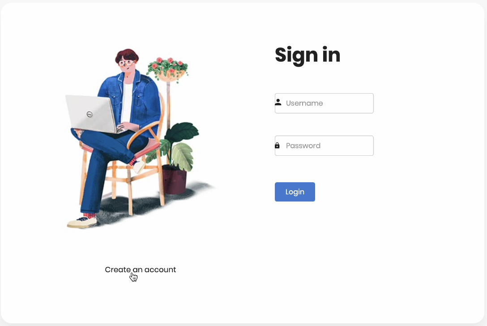
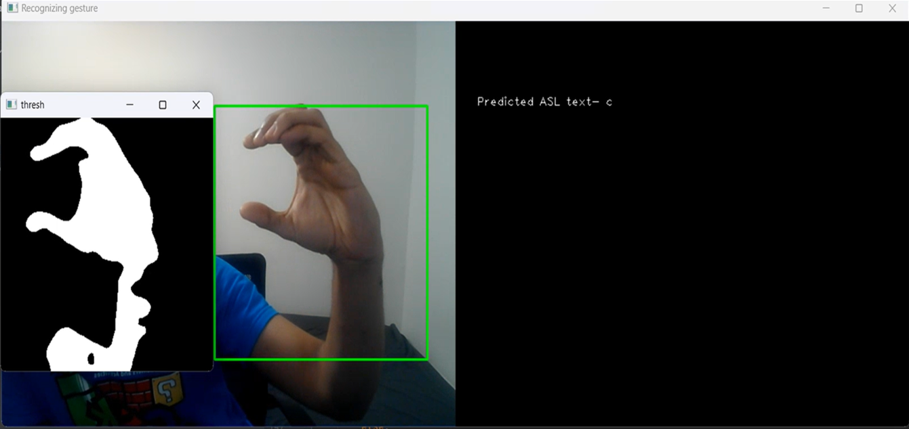

Built a Random Forest model predicting high-growth ICT startups, improving investment accuracy by 25% and cutting portfolio risk by 15% via data-driven market/founder analysis.
Top skills :
- Data Analytics
- Machine Learning
- Venture Capital

CDesigned a 3-year IoT solar roadmap (SWOT/Porter's) aligning with SDGs, slashing client
energy costs by 40% and accelerating GTM by 25% via strategic partnerships.
Top skills :
- Sustainability
- Product Strategy
- IoT
Associated with Rutgers University

Led Agile sprints to revamp a research platform with real-time tools, boosting engagement
by 30% and cutting task time by 20% via user story-driven iterations.
Top skills :
- Agile
- UX Design
- Collaboration